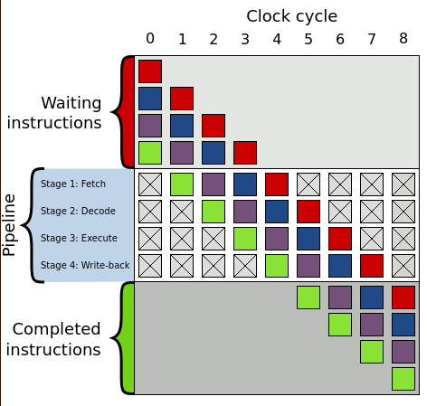
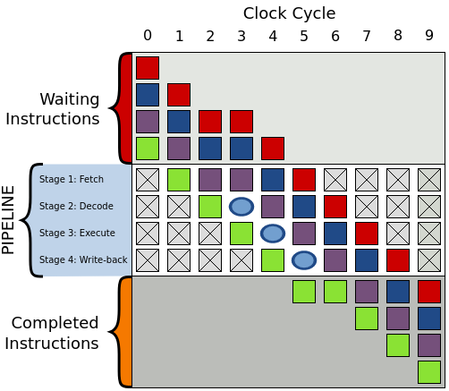

A branchless program is a program that doesn't include any conditional
operator (if, else, switch, ...).
The reason why people would go through the trouble of branchless programming is onefold: performance.
Modern CPUs try to read future instructions before they are executed so that they can stay ahead of the game. This is called "instruction pipelining", and is meant to implement instruction-level parallelism on single processors.
However, when the CPU is pipelining and a branch is present, the CPU won't be able to know what path it needs to run, so it takes a guess. When this guess is incorrect, the CPU discards the instructions previously read, and read the new instruction set for the correct path. This takes time and valuable clock cycles.
The processor is one of the components present in a CPU. It is composed of multiple processor units. Each processor unit performs an instruction such as adding two numbers, comparing two numbers, jumping to a different part of a program, loading and storing data in memory, etc. Those operations are hardwired into the circuitry of the processor inside the CPU.
When the CPU is asked to perform an instruction, it will receive an opcode,
which is just a unique binary number that the CPU will decode into
controlling signals that will orchestrate the behaviour of the CPU.
The CPU executes an instruction by fetching it from memory (either the
computer's memory or the CPU cache), decoding the opcode, executing the
instruction itself in the processor, and storing it back to memory.
In a nutshell, a pipeline is consisted of four stages: fetch, decode, execute, write-back.
Each one of those stages will be handled by a circuit in the CPU. So whenever a instruction needs to be run, there are 4 steps until the result is finally stored in memory.
Imagine you are going to a buffet restaurant with 4 different dishes. This is a peculiar restaurant, and you need to wait for the person in front of you to go through all the 4 dishes and pay for it before you can go down and start serving yourself.
This is a waste of time. A better way of serving people is to only wait for the person in front of you to go through the first dish before you start serving yourself.
This is what CPUs try to do by "pipelining" the work. While one instruction
is being decoded, the following one is already being fetched. When the
first instruction is decoded and starts being executed, now the second one
starts being decoded, and a third one is fetched, and so on so forth...
This is how it looks visually (image borrowed from wikipedia):

Now back to the buffet analogy. What happens if the person in front of you grabbed all the chips from the buffet plate, and if you had known that, you would go back and put another spoon of mashed potatos on your plate?
That happens a lot with the CPU when the next instruction depends on the execution of the current one. In this case, the CPU needs to wait for the first instruction to resolve before executing the next one, and this incurs a time penalty.
In the example below, during cycle 3 the purple instruction can only be decoded
once the green one is executed. A bubble is created to represent that during
cycle 3 the decode step will be idle, and subsequently on cycle 4 the
execute step will be idle and so on so forth until the bubble is out of
the pipeline - at which point execution resumes normally.

Sometimes it is even worse than this, you might have an if/else statement
in your code, and the CPU tried to guess which one to load beforehand, but it
it guessed the wrong one. Now it has to flush all of those instructions out of
the pipeline and load the correct ones.
Here is where branchless programming comes handy. Code that doesn't have conditionals will likely have less erroneously-guessed instructions loaded as the equivalent code with conditionals.
Let's start with the strawman example. Here's some simple C++ code with a branch:
int max(int a, int b) {
if (a > b) {
return b;
} else {
return a;
}
};
And the resulting assembly code (note: no optimisation flag turned on):
max(int, int):
push rbp
mov rbp, rsp
mov DWORD PTR [rbp-4], edi
mov DWORD PTR [rbp-8], esi
mov eax, DWORD PTR [rbp-4]
cmp eax, DWORD PTR [rbp-8]
jle .L2
mov eax, DWORD PTR [rbp-8]
jmp .L3
.L2:
mov eax, DWORD PTR [rbp-4]
.L3:
pop rbp
ret
You will notice that we have two conditional jumps. The equivalent branchless code looks like this:
int max(int a, int b) {
return a*(a > b) + b*(b >= a);
};
max(int, int):
push rbp
mov rbp, rsp
mov DWORD PTR [rbp-4], edi
mov DWORD PTR [rbp-8], esi
mov eax, DWORD PTR [rbp-4]
cmp eax, DWORD PTR [rbp-8]
setg al
movzx eax, al
imul eax, DWORD PTR [rbp-4]
mov edx, eax
mov eax, DWORD PTR [rbp-8]
cmp eax, DWORD PTR [rbp-4]
setge al
movzx eax, al
imul eax, DWORD PTR [rbp-8]
add eax, edx
pop rbp
ret
This looks a bit more convoluted, and it has more instructions. However, we got rid of those jumps.
This example is terrible, and it's chosen on purpose. The first function, can
be very easily optimised by the compiler if we use the flag -O3. Generating
this assembly code:
max(int, int):
cmp edi, esi
mov eax, esi
cmovle eax, edi
ret
Whereas for the second code, even with the optimisation flag on, the underlying assembly code is worse as the compiler can't optimise it further:
max(int, int):
xor eax, eax
cmp edi, esi
cmovle edi, eax
cmovg esi, eax
lea eax, [rdi+rsi]
ret
In this case, the branchless C++ code fell apart due to the compiler being
really good at optimisations, one of such optimisations is using branchless
programming itself. However, this illustrates why it's important to
actually see what the compiled code looks like. However, all things being
equal, branchless code will be faster on an assembly level, and there will
be many times where the compiler can't optimise the code (like when you have a
volatile variables all over the show).
Many interpreted languages don't have the cleverness for optimisation of a GCC compiler, and in many cases, code ran by the virtual machine is murky to the outsiders eyes. Nevertheless, I work with Python at the moment and it would be interesting to see what happens once branchless programming takes over.
Using the same example in Python we have:
def max(a, b):
if a > b:
return a
else:
return b
And this is the disassembled Python byte code into mnemonics:
2 0 LOAD_FAST 0 (a)
2 LOAD_FAST 1 (b)
4 COMPARE_OP 4 (>)
6 POP_JUMP_IF_FALSE 6 (to 12)
3 8 LOAD_FAST 0 (a)
10 RETURN_VALUE
5 >> 12 LOAD_FAST 1 (b)
14 RETURN_VALUE
First things first, what is happening under the hood? For every bytecode
instruction that is executed, the interpreter will branch out many times.
The comparison operator > for example, requires a branch to check for the
opcode equivalent of >, another branch to verify if the object being
compared has a __gt__ method, more branches to verify if both objects
being compared are valid for the comparison being performed, and many other
branches until the value of the function call is actually computed and
returned.
We cannot compare Python bytecode with a single machine-level instruction, because a single bytecode instruction will perform many machine-level instructions inside the interpreter. Also, some Python bytecode instructions like calling a function are more expensive than other simpler ones like performing a mathematical operation like adding.
With all the conditional compilation clutter removed from CPython, the code that evaluates a piece of bytecode into a C instruction is as follows:
PyObject* _PyEval_EvalFrameDefault(/* ... */ ) {
// context setup
for (;;) {
// periodic check
switch (opcode) {
case TARGET(LOAD_FAST): {
PyObject *value = GETLOCAL(oparg);
if (value == NULL) {
format_exc_check_arg(/* ... */ );
goto error;
}
Py_INCREF(value);
PUSH(value);
FAST_DISPATCH();
}
case TARGET(STORE_FAST): {
PyObject *value = POP();
SETLOCAL(oparg, value);
FAST_DISPATCH();
}
case TARGET(BINARY_MULTIPLY): {
PyObject *right = POP();
PyObject *left = TOP();
PyObject *res = PyNumber_Multiply(left, right);
Py_DECREF(left);
Py_DECREF(right);
SET_TOP(res);
if (res == NULL)
goto error;
DISPATCH();
}
/* ... */
}
}
error:
// exception unwinding
}
// context cleanup
}
The full implementation is here.
The interesting bit is that even for a simple instruction like LOAD_FAST, we
can see a branch in the top-level case statement handler.
This means that to get a rough estimation of how two functions compare, we'll need to check how many bytecode instructions there are, and how expensive those bytecode instructions are.
At the moment of writing, I haven't found a handy table of Python bytecodes ordered from more-overhead to less-overhead, so we'll analyse one by one.
Our max(a, b) function above had the following instructions:
LOAD_FAST (4x): Performs an index lookup in the local variables array to
load the variable. This is pretty fast.COMPARE_OP (1x): Has a very high overhead when the comparison operator
is not just checking object identity as it needs to look at what is
in the dunder method for the particular comparison.POP_JUMP_IF_FALSE (1x): Has a low overhead from the interpreter's
perspective as the next position to jump to is not hard to find out by
reading the bytecode.RETURN_VALUE (2x): This just pops the stack, nice and easy.How about the branchless version?
def max(a, b):
return a*(a > b) + b*(b >= a)
opcodes:
2 0 LOAD_FAST 0 (a)
2 LOAD_FAST 0 (a)
4 LOAD_FAST 1 (b)
6 COMPARE_OP 4 (>)
8 BINARY_MULTIPLY
10 LOAD_FAST 1 (b)
12 LOAD_FAST 1 (b)
14 LOAD_FAST 0 (a)
16 COMPARE_OP 5 (>=)
18 BINARY_MULTIPLY
20 BINARY_ADD
22 RETURN_VALUE
We already can tell that this will not be light on the interpreter due to
having double COMPARE_OP instructions. The other differences here are:
BINARY_MULTIPLY: Surprisingly this has a considerable amount of overhead.
The interpreter needs to figure out the types being multiplied and find
their underlying multiply function before they can actually be multiplied.
So a "binary multiply" does not mean the interpreter will just process a
C * between the two operands.BINARY_ADD is very similar to the above, curiously enough it seems like
someone tried to optimise int summation but failed./* NOTE(haypo): Please don't try to micro-optimize int+int on
CPython using bytecode, it is simply worthless.
See http://bugs.python.org/issue21955 and
http://bugs.python.org/issue10044 for the discussion. In short,
no patch shown any impact on a realistic benchmark, only a minor
speedup on microbenchmarks. */
In conclusion this kind of branchless optimisation does not quite work with Python. However, due to time I haven't really analysed other branchless techniques that are superior in many situations like bit masking.